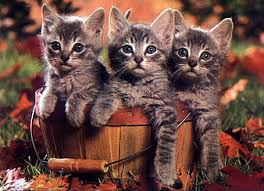
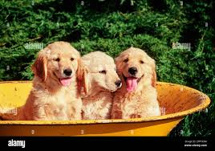

Unlike most domesticated animals that were captured and bred for labor or food, the cat (Felis catus) is widely believed to have domesticated itself. Around 10,000 to 12,000 years ago in the Fertile Crescent, early human farmers began storing grain. This attracted rodents, which in turn attracted Near Eastern wildcats (Felis silvestris lybica). Humans tolerated the cats for their pest control, and the cats tolerated humans for the easy meals. Over millennia, a mutualism formed that moved from the granary to the hearth.
The cat is an "obligate carnivore," meaning its body is biologically tuned to process only meat. This specialized diet is reflected in their anatomy:
Interestingly, adult cats rarely meow at each other. Meowing is a behavioral adaptation developed almost exclusively to communicate with humans. Cats use a variety of other vocalizations for their own kind:

The dog (Canis lupus familiaris) was the very first species to be domesticated by humans, likely between 20,000 and 40,000 years ago. Descended from an extinct species of wolf, dogs fundamentally changed human history. By assisting in the hunt and providing early warning systems for camp security, dogs allowed early humans to thrive in harsh environments. This "co-evolution" is so deep that dogs have actually developed specific facial muscles—like the one that raises the inner eyebrow—to mimic human-like expressions and trigger our nurturing instincts.
No other mammal on Earth displays the physical diversity of the dog. Through selective breeding, humans have created over 340 recognized breeds, categorized into functional groups:
a dog will often look at a human for help when a task becomes too difficult. This "looking back" behavior is a hallmark of their domestication. Furthermore, a dog's sense of smell is roughly 10,000 to 100,000 times more acute than a human's; if a human can smell a teaspoon of sugar in a cup of coffee, a dog can smell that same teaspoon in two Olympic-sized swimming pools.
The relationship between a dog and its owner is chemically significant. Studies show that when a dog and human look into each other's eyes, both experience a surge in oxytocin, the same hormone that bonds mothers and infants. This explains why dogs are not just "pets" but "family," filling roles as service animals, therapy companions, and emotional anchors for millions of people worldwide.